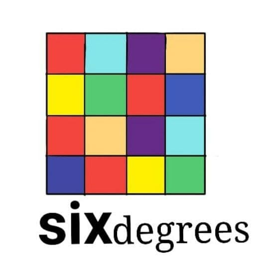

Social Networks
Origin and evolution:
The first traces of social networks date back to physical bulletin boards and community newsletters, which allowed people to share information and connect with other members of their community. However, it was with the arrival of the Internet that social networks underwent a transformative change. In the decade of 1970, the first forms of social networks emerged on platforms such as Usenet, that allowed users to communicate through discussion groups. These online forums enabled the exchange of ideas and opinions on specific topics. However, the true turning point came in the early 2000s with the advent of websites like Friendster, MySpace y LinkedIn. These platforms allowed users to create personal profiles and establish connections with friends, family, and colleagues, marking the beginning of an online social revolution. But the true explosion of social networks occurred with the launch of Facebook en 2004. Since then, we have witnessed the emergence of other popular social networks such as Twitter, Instagram, and Snapchat, each with its own essence and unique focus.
Platform diversity:
Today, there are countless social networks. Facebook, the largest and oldest, allows users worldwide to connect, share photos, and messages. Twitter focuses on microblogging and news. Instagram is popular for sharing photos and videos, while LinkedIn focuses on professional connections. Currently, the social media landscape is fascinating and diverse. Each platform has its own charm and appeal, catering to different needs and preferences. Here are some of the main platforms and their distinctive features: Facebook: Ideal for connecting with friends and family. Instagram: Focuses on visual content, especially photos and videos. Twitter: Limited to 280 characters per tweet, focused on quick updates and news. TikTok: Platform for short and fun videos.